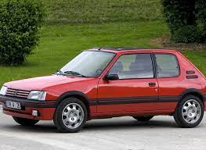

Historia Peugeot
Przedsiębiorstwo rodzinne zostało założone w 1810 r. przez Jeana-Frédérica i Jeana-Pierre'a
II Peugeot podczas przekształcania rodzinnego młyna hydraulicznego w stalownię, w
miejscowości Sous-Cratet w gminie Hérimoncourt (Doubs). Różne gałęzie rodziny rozwijały
bardzo różnorodną produkcję, ale wszystko oparte było na stali (narzędzia, sprężyny, żebra
parasolowe, ramy gorsetów, młynki do kawy, elementy zegarków, rowery itp.).
Podczas światowej wystawy w Paryżu Armand Peugeot przedstawia pierwszy automobil, noszący nazwę Peugeot. To trójkołowy pojazd samobieżny z silnikiem parowym, skonstruowany na spółkę z inżynierem Léonem Serpolletem (nie podjęto produkcji tego modelu).
Peugeot 203 to pierwszy model Marki wyprodukowany po II wojnie światowej. Był to pierwszy samochód jednobryłowy, wyposażony w głowicę o komorach półkolistych, z silnikiem w układzie V i pierwszy model Peugeot, wyprodukowany w liczbie ponad pół miliona egzemplarzy.
Podczas światowej wystawy w Paryżu Armand Peugeot przedstawia pierwszy automobil, noszący nazwę Peugeot. To trójkołowy pojazd samobieżny z silnikiem parowym, skonstruowany na spółkę z inżynierem Léonem Serpolletem (nie podjęto produkcji tego modelu).
Peugeot 203 to pierwszy model Marki wyprodukowany po II wojnie światowej. Był to pierwszy samochód jednobryłowy, wyposażony w głowicę o komorach półkolistych, z silnikiem w układzie V i pierwszy model Peugeot, wyprodukowany w liczbie ponad pół miliona egzemplarzy.
|  |  |